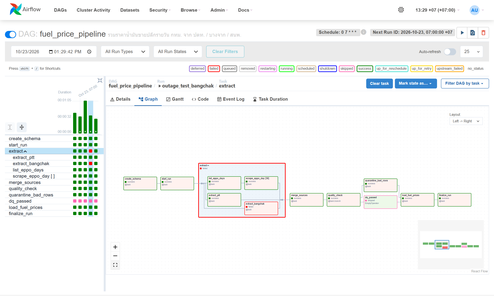
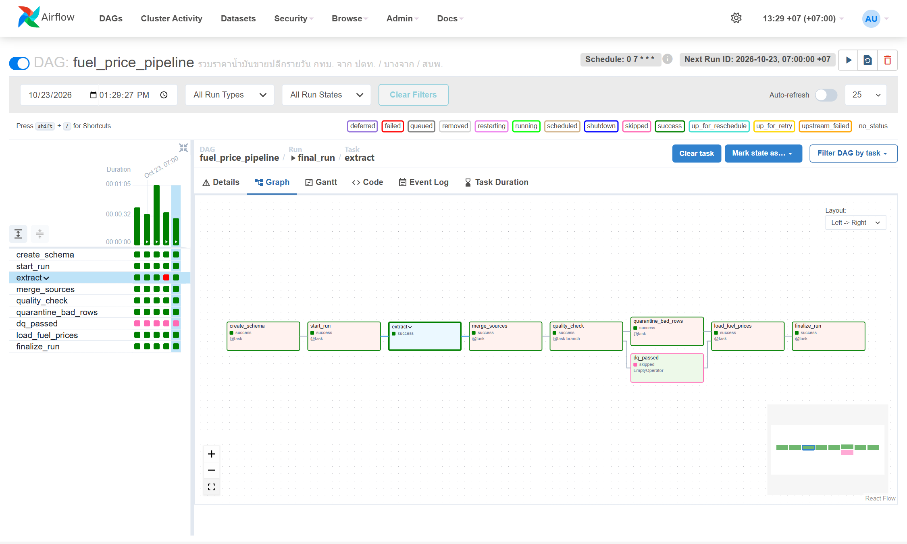
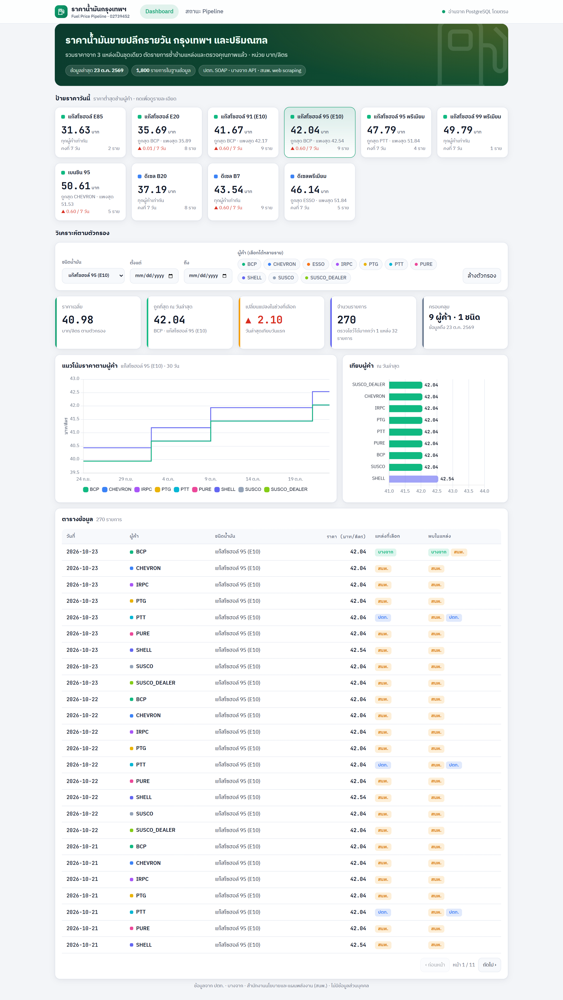
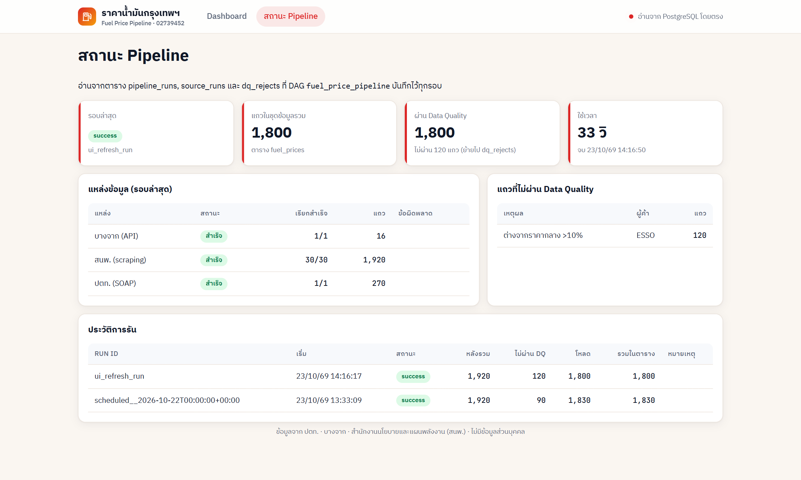

| ระดับ | สิ่งที่ทำ | ผล |
|---|---|---|
| ระดับ 1 | DAG fuel_price_pipeline: extract → transform (merge) → load ลง PostgreSQL (fueldb) และเว็บ Flask แสดงตารางกับกราฟ | ครบ |
| ระดับ 2 | ดึง 3 แหล่งขนานกันใน TaskGroup extract, แปลงชื่อน้ำมันทุกแหล่งให้เป็น schema เดียว (price_date, brand, fuel_code, price), ใช้ UPSERT ON CONFLICT DO UPDATE (รันซ้ำ 5 รอบ จำนวนแถวคงที่ 1,830), เว็บมี KPI 5 ตัว และตัวกรองชนิดน้ำมัน ผู้ค้า และช่วงวันที่ | ครบ |
| ระดับ 3 | • แหล่งล่ม: merge_sources ใช้ trigger_rule=all_done และรวมเฉพาะแหล่งที่สำเร็จ ทดสอบด้วย Variable simulate_down=bangchak_api ได้ผลรอบนั้นเป็น partial และยังโหลดได้ครบ 1,830 แถว• ตัดซ้ำข้ามแหล่ง: ราคา PTT มีทั้งจาก ปตท. และ สนพ. ส่วน BCP มีทั้งจากบางจากและ สนพ. จึงเลือก 1 แถวต่อ (วัน, ผู้ค้า, น้ำมัน) โดยให้แหล่งของเจ้าของแบรนด์ชนะ (2,206 แถวดิบ → 1,920 แถว) • Data Quality + branch: ตรวจช่วงราคา 10–100 บาท, วันที่ในอนาคต และราคาที่ต่างจากมัธยฐานของผู้ค้าอื่นเกิน 15% ถ้าไม่ผ่าน DAG จะแตกไปทาง quarantine_bad_rows แล้วย้ายแถวไปตาราง dq_rejects (พบราคา ESSO ผิดปกติ 90 แถว) | ครบ |
| โบนัส | Dynamic Task Mapping: scrape_eppo_day.expand() สร้าง task ละ 1 วัน รวม 30 task · หน้าสถานะ pipeline บนเว็บที่ /status | ครบ |
แหล่งข้อมูล: (1) ปตท. SOAP Web Service GetOilPrice (2) บางจาก Oil Price API แบบ JSON (3) สนพ. ใช้ web scraping ด้วย requests + BeautifulSoup โดย GET หน้า ASP.NET เพื่ออ่าน __VIEWSTATE แล้ว POST วันที่ ได้ราคาของ 10 ผู้ค้า (ไม่ใช้ Selenium) ปฏิบัติตาม robots.txt, เว้นระยะ request และไม่เก็บข้อมูลส่วนบุคคล ชุดข้อมูลรวมมี 1,830 รายการ ครอบคลุม 30 วัน, 10 ผู้ค้า และ 11 ชนิดน้ำมัน

outage_test_bangchak: extract_bangchak ล้มเหลว (สีแดง) แต่ merge, quality_check และ load ยังทำงานต่อได้ · scrape_eppo_day [30] คือ Dynamic Task Mapping · DQ ไม่ผ่านจึงไปทาง quarantine_bad_rows และ dq_passed ถูก skip
final_run: Grid ซ้ายแสดงประวัติ 5 รอบ (รอบที่ 4 คือรอบจำลองแหล่งล่ม)

| ปัญหา / อาการ | วิธีหาสาเหตุ | วิธีแก้ |
|---|---|---|
| 1. ตารางราคาบนเว็บ สนพ. มีแต่ 30.00 ทุกช่อง | อ่าน HTML ที่ดึงมาด้วย requests พบว่าเป็นค่า placeholder และราคาจริงถูกเติมด้วย JavaScript ภายหลัง ซึ่งใช้ Selenium ไม่ได้ จึงหา iframe ในหน้าเดียวกันจนพบหน้ารายงาน ASP.NET ropbydaypublic.aspx |
scrape ฟอร์มแทน: GET หน้าเพื่ออ่าน hidden field (__VIEWSTATE, __EVENTVALIDATION) แล้ว POST TbxToDate ได้รายงานรายวันที่ย้อนหลังได้ และมีครบทุกผู้ค้า |
2. scrape สนพ. ล้มเหลวเป็นบางครั้ง ด้วย ChunkedEncodingError: IncompleteRead |
ดู traceback ใน log ของ task พบว่าเซิร์ฟเวอร์ตัดการเชื่อมต่อระหว่างส่งหน้า 250 KB ซึ่ง urllib3 Retry ไม่ครอบคลุมกรณีที่ตัดกลาง body | เขียน _with_retry() ลองใหม่ 3 ครั้งแบบ backoff และแบ่ง scraping เป็น task ละวัน (Dynamic Task Mapping, ขนานไม่เกิน 4) วันที่ล้มเหลวจึงไม่ทำให้วันอื่นล้มตาม |
| 3. ราคาบางจากวันที่ 22 ต.ค. ไม่ตรงกับ สนพ. (41.44 กับ 42.04) ทำให้กราฟมีจุดตก | เทียบแถวที่ซ้ำกันข้ามแหล่งใน stg_fuel_prices แล้วอ่าน JSON ของบางจากอีกครั้ง พบว่า PriceYesterday คือราคาก่อนการปรับครั้งล่าสุด (วันประกาศ OilPriceDate) ไม่ใช่ราคาของ "วันนี้ − 1" |
ใช้ PriceYesterday กับวันที่ OilPriceDate ลบแถวผิดใน staging แล้วรันใหม่ ผลคือราคาตรงกันทุกวัน การเก็บคอลัมน์ sources ไว้ช่วยให้ตรวจไขว้แบบนี้ได้ |
4. DAG import error: Context key parameter run_id can't have a default |
รัน airflow dags list-import-errors |
เปลี่ยน default ของ run_id จาก "{{ run_id }}" เป็น None ให้ TaskFlow inject ค่าจาก context เอง |
ข้อสังเกตจาก DQ: ราคา ESSO ใน สนพ. ต่ำกว่าผู้ค้าอื่นประมาณ 20% และวันที่มีผล (24 ก.ย. 2568) ไม่ได้อัปเดต กฎ outlier จึงกักแถวเหล่านี้ไว้ ไม่ให้เข้าชุดข้อมูลหลัก
| เวลา | งาน |
|---|---|
| 13:00–13:15 | อ่านโจทย์ เลือกหัวข้อที่มีแหล่งข้อมูลราคาเดียวกันหลายแหล่ง ทดสอบว่าแต่ละแหล่งเรียกได้จริงและอ่าน robots.txt แล้วจึงจองหัวข้อ |
| 13:15–13:25 | สำรวจโครงสร้างข้อมูลแต่ละแหล่ง (SOAP, JSON, ฟอร์ม ASP.NET) ออกแบบ schema กลางและกฎแปลงชื่อน้ำมัน |
| 13:25–14:10 | เขียน DAG ให้ระดับ 1 ใช้งานได้ก่อน แล้วเพิ่ม TaskGroup, UPSERT, การรับมือแหล่งล่ม, การตัดซ้ำ, DQ branch และ Dynamic Task Mapping ตามลำดับ |
| 14:10–14:40 | เขียนเว็บ dashboard และหน้า status ทดสอบรันซ้ำ จำลองแหล่งล่ม และแก้ปัญหาข้อ 2–4 |
| 14:40–15:30 | ถ่ายภาพหน้าจอ เขียน README และ PDF จากนั้นทดสอบ docker compose up จาก repo ใหม่ทั้งหมด |
| 15:30–16:00 | เวลาสำรอง: push ขึ้น GitHub ตรวจว่า repo เป็น public และส่งงาน |
สิ่งที่ตัดออกและเหตุผล
FUEL_LOOKBACK_DAYS): ข้อมูลเกิน 100 รายการอยู่แล้ว ทั้งยังไม่สร้างภาระให้เว็บหน่วยงาน และอาจารย์รันตรวจได้ในเวลาประมาณ 1 นาที